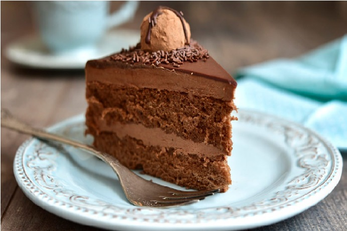

Bolo em 15 min
░░░░░░░░░░▄▄█▀▀▄░░░░
░░░░░░░░▄█████▄▄█▄░░░░
░░░░░▄▄▄▀██████▄▄██░░░░
░░▄██░░█░█▀░░▄▄▀█░█░░░▄▄▄▄
▄█████░░██░░░▀▀░▀░█▀▀██▀▀▀█▀▄
█████░█░░▀█░▀▀▀▀▄▀░░░███████▀
░▀▀█▄░██▄▄░▀▀▀▀█▀▀▀▀▀░▀▀▀▀
░▄████████▀▀▀▄▀░░░░
██████░▀▀█▄░░░█▄░░░░
░▀▀▀▀█▄▄▀░██████▄░░░░
░░░░░░░░░█████████░░░░
Faça um bolo sem saber cozinhar
Por Jacquin
Preciso saber cozinhar?
Faça deliciosos bolos de todos os sabores sem nenhum engrediente ou experência na cozinha. Não seja a vergonha da profissão.
Ingredientes
- Farinha
- Ovo
- Açucar
- Leite
- Fermento
- Oleo
Modo de fazer
- Quebrar ovos
- Misturar junto com a farinha
- Adicionar açucar e fermento
- Assar por 12 minutos
